Как сделать видео в higgsfield
От пустого экрана до готового ролика. Какую модель брать, как писать промпт и что указать, чтобы было похоже на настоящую съёмку.
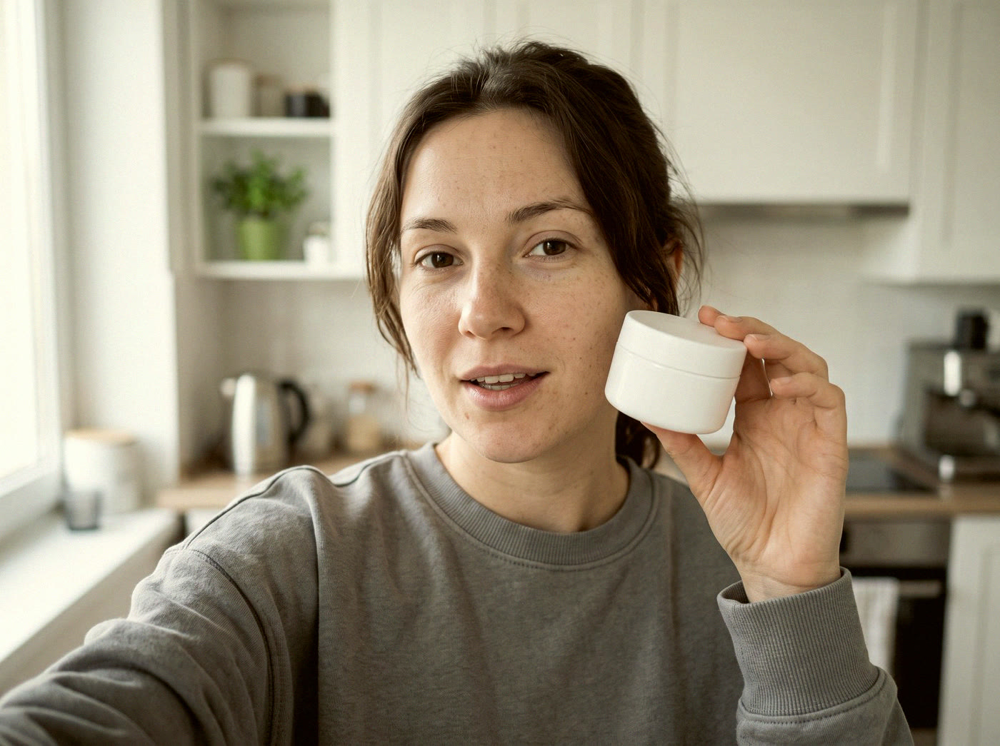
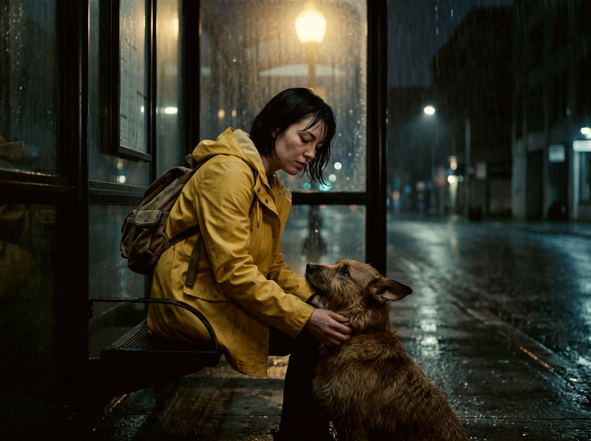
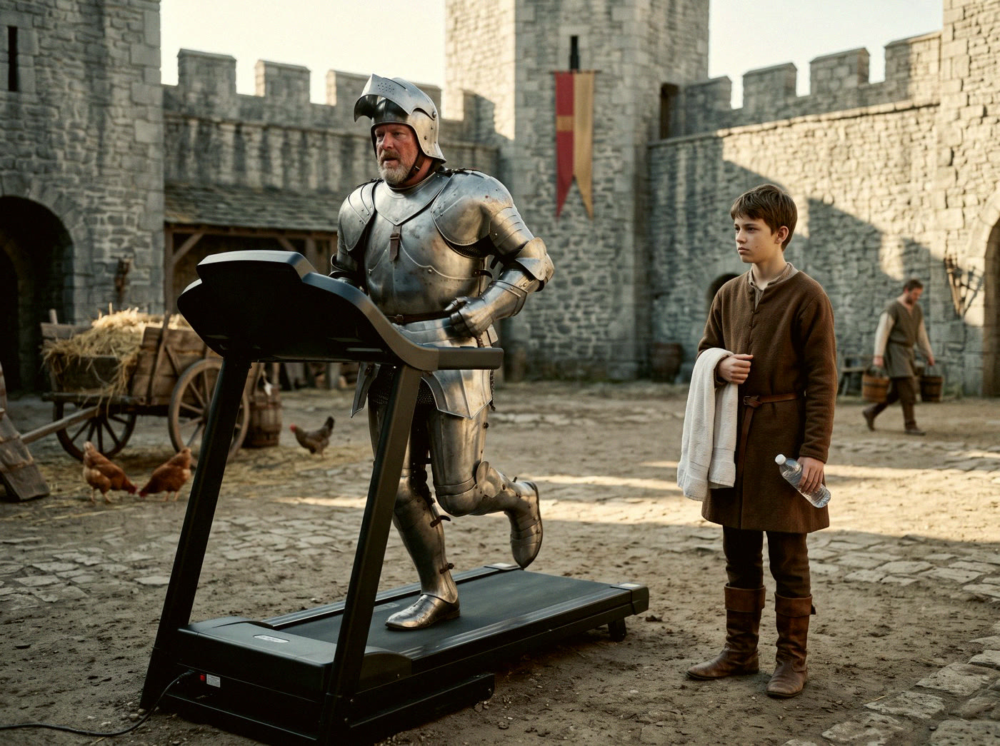
От текста до готового ролика — восемь шагов.
Почему Higgsfield
Сервисов, где собраны нейросети для видео, десятки. Их называют агрегаторами. Модели внутри часто одни и те же, а удобство и возможности разные.
Я работаю в Higgsfield. Причин четыре.
Всё в одном аккаунте
Seedance 2.5, Kling, Veo, Wan и модели для картинок. Одна подписка вместо пяти.
Картинки и видео рядом
Героя, место и сам ролик делаешь в одном сервисе.
Цена видна до запуска
На кнопке Generate написано, сколько спишется. Сюрпризов нет.
Открытые инструкции
Higgsfield сам публикует, как писать промпты под каждую модель. Этот гайд на них и стоит.
Всё ниже показано на Higgsfield. Промпты и правила работают в любом сервисе, где есть те же модели.
Как это устроено
Higgsfield — это сервис, где собраны разные нейросети: одни делают картинки, другие видео, третьи звук. Такие нейросети здесь называют моделями.
Ролик почти всегда собирается в три шага.
Картинки
Герой, место, предмет — то, что должно выглядеть одинаково во всех кадрах.
Видео
Модель оживляет сцену по твоему описанию и по этим картинкам.
Монтаж
Склейка, цвет, титры — уже в CapCut или DaVinci Resolve.
Для одной простой сценки первый шаг можно пропустить и сразу писать текст.
Пять слов, которые встретятся дальше
- Промпт
- Текст-описание сцены для модели.
- План
- Один непрерывный кусок ролика, от склейки до склейки. По-английски shot.
- HARD CUT
- Резкая склейка: один план сразу сменяется другим.
- Кредиты
- Внутренние деньги сервиса. Каждая генерация списывает часть.
- 480p, 720p, 1080p
- Чёткость картинки. Чем больше число, тем чётче и дороже.
Какую модель брать
Модель выбирай под каждую сцену отдельно. Для начала хватит одной — Seedance 2.5.
Видео
Список моделей открывается по строке Model в окне Video. У каждой подписаны качество и длина ролика.
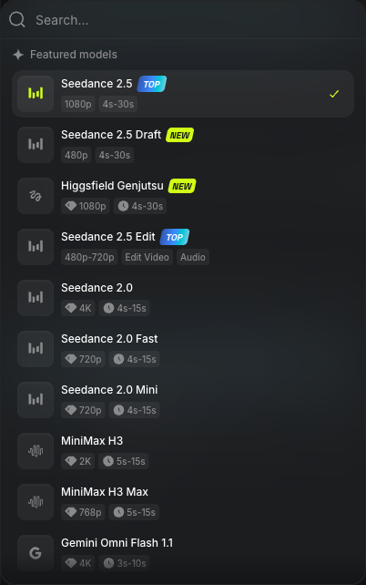
Список моделей видео. Снимок от 9 октября 2026.
Seedance 2.5 основная
Живые люди, реклама, сценки из нескольких планов.
Seedance 2.5 Draft
Черновик той же сцены перед чистовым запуском.
Kling 3.0
Сцена из нескольких связанных планов подряд.
Google Veo
Самое правдоподобное движение и свет. Для одного «дорогого» кадра.
Wan 3.0
Нужно задать первый и последний кадр. Перекрасить готовое видео.
Minimax Hailuo
Быстрые дешёвые пробы идеи.
Картинки
Soul 2.0 и Soul Cinema
Портрет героя: модный или «киношный» вид.
Nano Banana Pro
Быстро поменять что-то вокруг героя, сохранив его самого. Предмет и товар.
Seedream 5.0 Pro
Сложная сцена с длинным описанием.
GPT Image
В картинке нужен текст или точный цвет бренда: с ними справляется лучше многих.
Список моделей обновляется, названия могут отличаться. Бери самую свежую версию той же семьи. Здесь список на 9 октября 2026.
Герой — место — предмет
Модели можно дать не только текст, но и картинки-образцы: героя, место, товар. В Higgsfield они называются References. Модель держится образца, и герой не меняется от ролика к ролику.
Когда образец нужен? Ответ даёт один вопрос:
Появится ли это больше одного раза?
- Одна сценка, герой безымянный
- Ничего не готовь. Опиши героя словами в промпте.
- Один герой в нескольких роликах
- Сначала сделай его картинку-образец и сохрани.
- Реклама: товар точь-в-точь
- Загрузи фото товара. Словами его не описывай.
- Одно место, несколько планов
- Загрузи картинку места.
- Важны точные цвета и стиль
- Загрузи картинку-образец стиля.
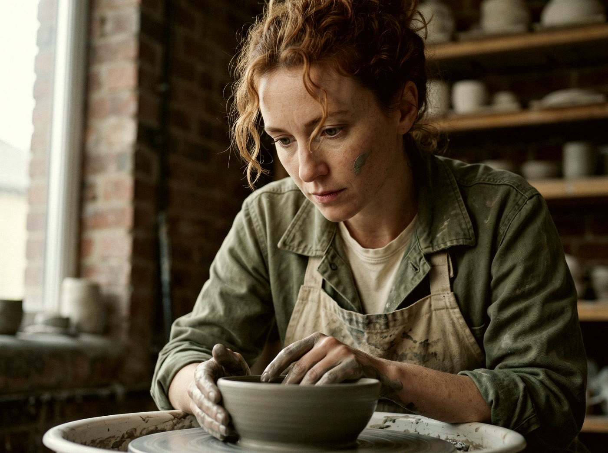
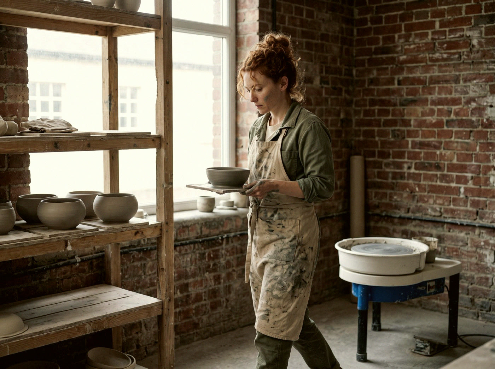
Как сделать образец героя
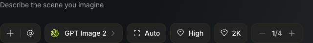
Открой раздел Image
Он сверху, рядом с Video. Выбери модель картинок из раздела 2.
Опиши героя
Возраст, лицо, волосы, сложение, одежда. Попроси лист с героем на ровном сером фоне: лицо анфас и фигура в рост.
Скачай картинку
Загружай её в References в каждом ролике с этим героем.
Порядок
Сначала всё, что повторяется: герой, его одежда, место, предметы. Потом видео. Если начать с видео — герой в каждом ролике будет новым человеком.
Где писать промпт
Промпт — это описание сцены для модели. Раздел Video — в верхнем меню сайта.
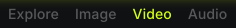
Вот окно, в котором всё происходит. Цифры на снимке — номера шагов.
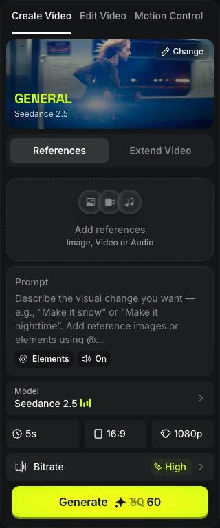
Окно на higgsfield.ai, раздел Video. Снимок от 9 октября 2026.
Открой раздел Video
Зайди на higgsfield.ai, зарегистрируйся или войди и сверху нажми Video. Слева откроется вкладка Create Video.
Выбери модель
Найди строку Model под полем для текста, нажми на неё и выбери Seedance 2.5.
Загрузи образцы
Если есть образцы героя, места или товара: Add references. Сюда можно положить картинку, видео или звук. Это делается до текста.
Вставь промпт
В поле Prompt — текст на английском. Как его написать, в разделах 5 и 6.
Оставь звук
Под полем кнопка On — это звук. Модель делает его сама, вместе с видео.
Длина, формат, качество
Три кнопки в ряд. Формат 9:16 — для Reels и TikTok, 16:9 — для YouTube.
Посмотри на цену
На кнопке Generate написано, сколько кредитов (внутренних денег сервиса) спишется. Число меняется вместе с длиной и качеством.
Нажми Generate
Через пару минут готовый ролик появится справа, в History. Скачай его. Если в промпте было несколько планов, ролик уже склеен.
Сначала черновик
Для пробы поставь качество пониже или выбери в списке моделей Seedance 2.5 Draft — выйдет заметно дешевле, цену смотри на кнопке Generate. Когда всё встало как надо — тот же промпт в хорошем качестве.
Что ещё есть в окне
Кнопка Rerun под роликом в History запускает тот же промпт ещё раз. Вкладка Extend Video продлевает готовый ролик.
Как работает промпт
Модели нужен список: что, кто, где, как снято. Рассказ «с начала до конца» она понимает хуже.
Промпт — это один английский текст, в котором каждая часть начинается с пометки. Порядок советует сам Higgsfield:
- GLOBAL STYLE
- Жанр, цвет, вид плёнки или цифры, формат кадра и чего быть не должно.
- SCENE
- Одна строка: что происходит, где, какое настроение.
- CHARACTERS
- Каждый человек: лицо, волосы, сложение, одежда.
- LOCATION
- Место и предметы в нём — отдельно от людей.
- FIRST FRAME AND BLOCKING
- Кто где стоит и куда смотрит в первом кадре.
- SHOT 1, SHOT 2…
- Каждый план (кусок ролика от склейки до склейки): крупность и действие, по секундам.
- OPTICS
- Объектив для каждого плана.
- CAMERA
- Движение камеры для каждого плана.
- PHYSICS
- Как движутся ткань, волосы, дым, вода.
- LIGHTING
- Откуда свет и какой.
- AUDIO
- Что слышно и чего быть не должно.
Пропустишь часть — модель додумает её сама, и чаще всего не так. Например, без LOCATION место меняется от плана к плану.
Если загрузил образцы
Героя словами заново не описывай. Пиши, что взять с картинки: identity and wardrobe locked to the reference image, ignore the reference backdrop. Текст тогда описывает только действие и камеру.
Простой вариант для первого раза
Одна-две фразы в таком порядке: кто и что делает → где и какой свет → как движется камера → настроение. Отдельно звуки.
A woman walks through a crowded train station at rush hour, checking her phone, camera tracking close at shoulder height, warm overhead fluorescent light, tense and rushed. SFX: station ambient noise, announcements in the background.
Промпт с чат-помощником
Писать на английском с нуля не нужно. Опиши сцену по-русски, а в промпт её превратит чат-помощник: ChatGPT, Claude, Gemini или любой другой.
На бесплатном тарифе
В бесплатном чате правила обычно приходится давать заново в каждом разговоре, а число сообщений ограничено. Поэтому всё нужное давай одним сообщением. Скопируй и допиши свою сцену в конце.
Ты пишешь промпты для видеомодели Seedance 2.5. Правила: 1. Ответ — один текст на английском, каждый раздел начинается с пометки. Порядок: GLOBAL STYLE, SCENE, CHARACTERS, LOCATION, FIRST FRAME AND BLOCKING, SHOT 1…N (с секундами), OPTICS, CAMERA, PHYSICS, LIGHTING, AUDIO. 2. В каждом плане одно действие, и оно уже идёт в первом кадре. 3. Предметы называй простыми словами: smartphone, glass bottle. 4. У каждого плана своё движение камеры. Камера никогда не стоит мёртво. 5. Планы разной длины. В конце каждого плана, кроме последнего, пиши HARD CUT (резкая склейка). 6. Свет: откуда он идёт и какой. Не «красивый свет». 7. В конце GLOBAL STYLE — запреты: no text on screen, no subtitles, no logos, no slow motion. 8. Лица придуманные: every face is fully original and invented. 9. После промпта дай перевод на русский, чтобы я проверил смысл. Сначала задай мне до трёх вопросов, если чего-то не хватает. Потом пиши. Моя сцена: [опиши по-русски: кто, что делает, где, сколько секунд, вертикально или горизонтально]
Дальше проси правки по одной: «в плане 2 замени движение камеры на медленное приближение, остальное не трогай».
На платном тарифе
Что именно доступно, зависит от сервиса и тарифа — проверь в своём чате.
Сохрани правила один раз
Создай проект (в ChatGPT и Claude это так и называется) и положи туда правила из блока выше. В новых разговорах внутри проекта они уже действуют.
Покажи картинку
Приложи кадр-образец или картинку героя и попроси: «опиши героя и свет так, чтобы модель повторила». С картинки помощник описывает точнее, чем человек по памяти.
Разбери неудачу
Приложи стоп-кадр из получившегося ролика и промпт: «вот что просил, вот что вышло — что в промпте не так? Поменяй одну вещь».
Веди журнал
В том же проекте храни промпты, которые сработали. Следующий ролик проси писать «как тот, что сработал, но с другим героем и местом».
Промпт по правилам напишет и бесплатный помощник, и картинки многие бесплатные версии тоже читают. Платный удобнее тем, что помнит правила и реже обрывает разговор на середине.
Как добиться реализма
Модель по умолчанию делает глянцевую картинку. Чтобы было похоже на съёмку, прямо проси несовершенства. Строки ниже вставляй в промпт как есть.
Кожа и лицо
skin unretouched and hyper-detailed: pores, fine lines, slight asymmetry. Natural pore texture, no over-retouching, no beauty filter.
Добавь живые мелочи: natural blinks, реакция с опозданием на полсекунды.
Свет
Один настоящий источник и его направление.
one real light source: high midday sun from the left, hard shadows
Полезно писать и чего не надо: NOT soft, NOT diffused.
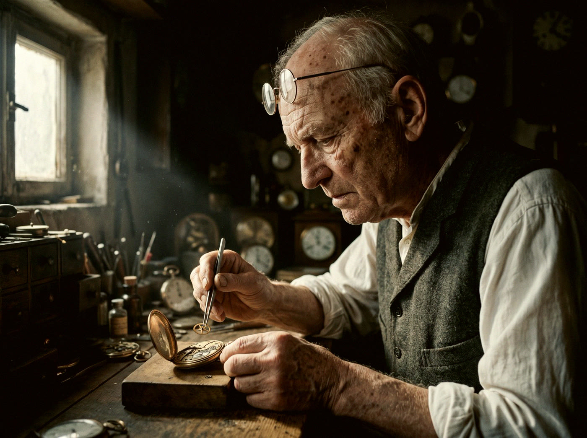
Камера
Назови, кто и как снимает. Съёмка с рук:
handheld weight, operator breathing, small human corrections, no smooth drone glides
Съёмка со штатива или тележки:
slow, deliberate, machine-smooth dolly move, no handheld jitter
Для ролика, как будто снятого на телефон: arm's-length wobble, tiny refocus moments.
Объектив и плёнка
Задай один объектив на план, например 35mm lens, и не меняй его внутри плана. Для «киношного» вида добавь зерно:
light authentic 35mm film grain, halation bloom on highlights
Движение и вес
Главный признак нейросети — всё «плывёт». Проси вес:
walking carries true weight: heel strike, weight transfer. Hair strands move and release, never static. Fabric lags behind the body.
И всегда: real-time motion, no slow motion.
Звук
Только звуки места:
on-location sound only: footsteps on wet pavement, distant traffic. No music, no narration.
Что ещё помогает
Одно действие на план
Три действия за три секунды модель превращает в кашу.
Герой крупно
Герой и главный предмет занимают не меньше половины кадра. Мелкое рисуется хуже.
Добавь второго человека
Если сцена позволяет: прохожего, продавца. Кадр, где на героя кто-то реагирует, выглядит живее.
Никто не смотрит в камеру
Если это не разговор со зрителем:
nobody looks into the lens.Текст в кадре не проси
Выходит абракадабра. Надписи добавляй в монтаже.
Цвет доводи в монтаже
Если модель не дала нужное зерно или цвет с двух попыток, не трать кредиты — добавь их в монтаже.
Если получилось не то
Меняй одну вещь за раз
Или промпт, или образец — не оба сразу. Иначе не поймёшь, что помогло.
Плох один план — правь только его
Поменяй описание этого плана и запусти снова. Остальной текст не трогай.
Две-четыре попытки — это нормально
Столько обычно уходит на один кадр.
Не спорь с моделью
Если она упорно не делает точную позу рук или толпу, которая реагирует по команде, — придумай кадр по-другому и не трать кредиты.
Хочешь целый ролик, а не один кадр?
Этот гайд довёл тебя до первого видео. Полный гайд показывает, как я собираю целый абсурдный ролик — вроде гладиаторов на самокатах и Бенджамина Франклина в Лос-Анджелесе 1985 года.
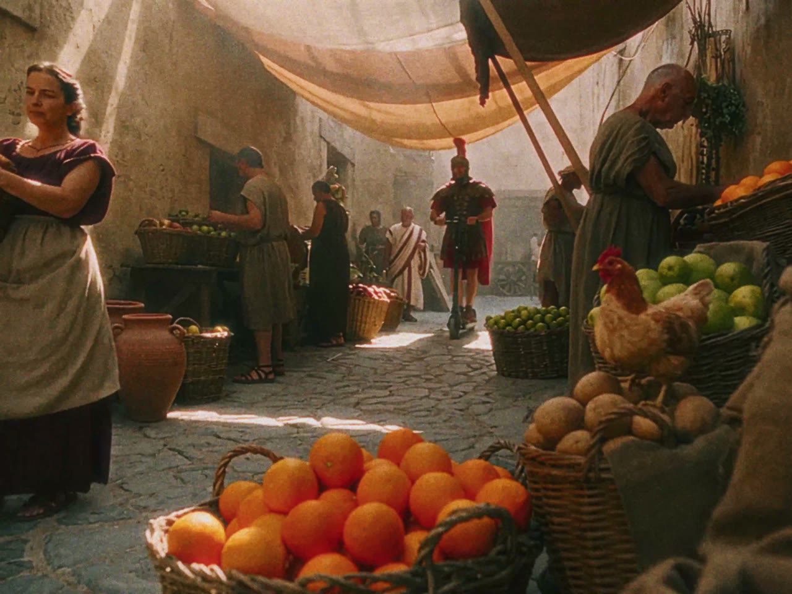
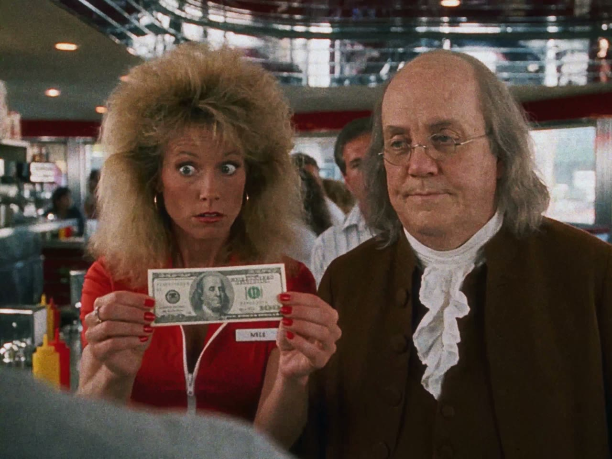
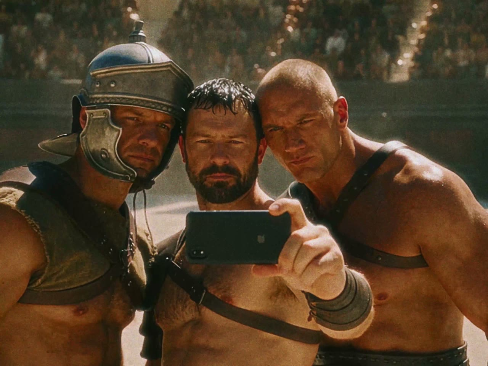
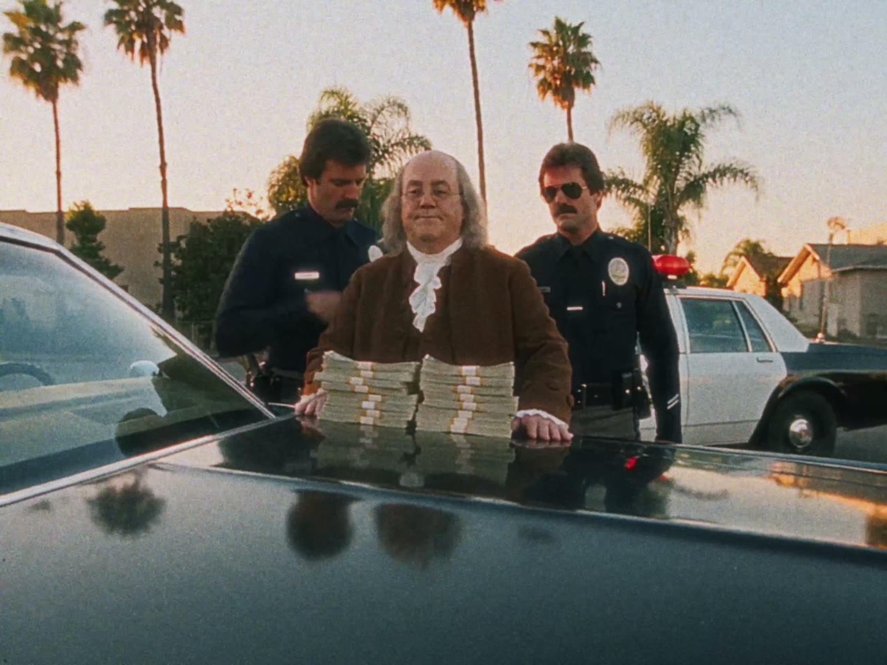
15 сцен из двух моих роликов. У каждой кадр, точный промпт и что сработало или нет.
3 готовых шаблона. Промпт-помощник, который сам пишет промпт для видео, шаблон со слотами и шаблон листа героя.
Ошибки, на которых я потерял генерации, и как их обойти.
Короткий монтаж и покраска в CapCut.
15 $, один платёжИз России можно оплатить в рублях. Ссылка приходит сразу после оплаты.
Получить полный гайдТеперь твоя очередь
Открой Higgsfield, возьми сообщение для помощника из раздела 6 и сделай первый черновик. Будут вопросы — пиши, стараюсь отвечать всем.
Полный гайд — 15 $ @mr_sukhx в Instagram